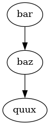

listem3u
listem3u module
test_listem3u module
pegase module
listem3u
Documentation du projet listem3u
Afficher la source de la page
Documentation du projet listem3u
La documentation d’usage de sphinx
A cool website

Les modules du projet listem3u
listem3u module
test_listem3u module
pegase module